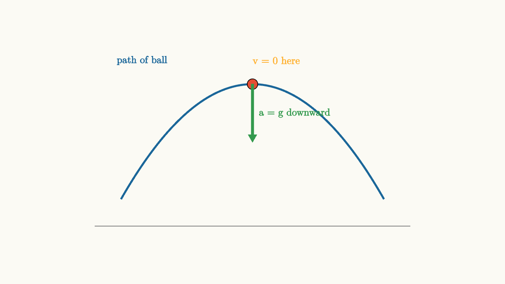
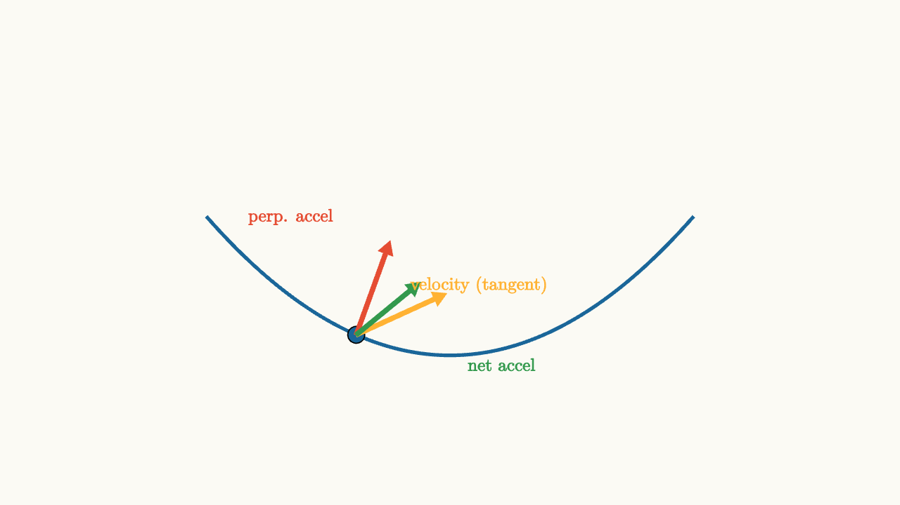

Motion Needs A Clock
Imagine two runners setting off from the same starting line, following exactly the same curved path through a park. They take the same route, pass the same trees, step over the same puddle. But one finishes in 8 minutes and the other finishes in 22 minutes.
Ask yourself: were they doing the same thing?
Geometrically, yes. The paths are identical. Physically, absolutely not. One runner was flying; the other was strolling. And here is the puzzle that starts all of mechanics: if you only showed someone a photograph of the path, they could not tell the difference. The path is just a curve. It carries no information about how fast anything moved along it.
This is why physics needs a clock. The moment you attach time to a position, you get something genuinely new: a story of motion, not just a picture of a route.
Position Is a Function of Time
The simplest way to make this precise is to write position as $x(t)$, or in two and three dimensions, as $\vec{r}(t)$. This notation is quiet but serious. It says that for each moment $t$, there is a corresponding position. The path you see when you plot the curve is just the geometric shadow of that function.
Consider a ball thrown horizontally off a cliff. The path curves downward in a graceful arc. But that arc is actually the simultaneous record of two very different stories: a horizontal story where the ball moves at constant speed, and a vertical story where it accelerates downward due to gravity. Both stories share the same clock. That shared clock is what links them.
Without time, we cannot ask questions like "how fast was the ball going when it hit the ground?" or "when does it reach its highest point?" The clock lets us answer those questions.
The Puzzle of Instantaneous Speed
Here is a question that looks simple but is actually quite subtle: what does it mean to say a car is moving at 60 kilometers per hour right now, at this instant?
If you calculate average speed over any interval, you can do it: displacement divided by time. But at a single instant, the car has not moved any distance. The time interval is zero. You'd get 0 divided by 0, which is no answer at all.
This puzzle bothered mathematicians for centuries. The answer is the derivative.
Average velocity over an interval from $t$ to $t + \Delta t$ is
As you shrink $\Delta t$ toward zero, this ratio approaches a limit. That limit is the derivative:
Geometrically, what you are doing is this: draw a secant line connecting two nearby points on the position-vs-time graph. As you bring those points closer together, the secant line rotates. In the limit, it becomes the tangent line at the point. The slope of that tangent line is instantaneous velocity.
source
background = [0.985, 0.98, 0.955, 1]
camera = Camera(4.8b)
"position curve"
mesh axes = block {
. stroke{GRAY, 1.2} Line(start: [-3, -1.6, 0], end: [3, -1.6, 0])
. stroke{GRAY, 1.2} Line(start: [-2.8, -1.8, 0], end: [-2.8, 1.6, 0])
. color{GRAY} center{[2.85, -1.75, 0]} Text("t", 0.68)
. color{GRAY} center{[-2.65, 1.62, 0]} Text("x", 0.68)
}
mesh curve = stroke{BLUE, 3} ExplicitFunc(|t| 0.5 * t + 0.25 * t * t, [-2.4, 1.8, 120])
mesh pt1 = fill{ORANGE} center{[-1.4, -0.126, 0]} Circle(0.09)
mesh pt2 = fill{ORANGE} center{[1.2, 0.96, 0]} Circle(0.09)
mesh secant = stroke{ORANGE, 2} Line(start: [-1.4, -0.126, 0], end: [1.2, 0.96, 0])
mesh lbl = color{ORANGE} center{[0.6, 1.55, 0]} Text("secant slope = average velocity", 0.68)
play Write(0.9)
"bring points together"
pt1 = fill{ORANGE} center{[-0.2, -0.09, 0]} Circle(0.09)
pt2 = fill{ORANGE} center{[0.6, 0.39, 0]} Circle(0.09)
secant = stroke{ORANGE, 2} Line(start: [-0.2, -0.09, 0], end: [0.6, 0.39, 0])
play Trans(1.0)
"tangent line"
pt1 = fill{RED} center{[0.2, 0.15, 0]} Circle(0.09)
pt2 = []
secant = stroke{RED, 2} Line(start: [-1.2, -0.625, 0], end: [1.6, 0.925, 0])
lbl = color{RED} center{[0.6, 1.55, 0]} Text("tangent slope = instantaneous velocity", 0.68)
play Trans(0.9)The tangent line is the honest definition of instantaneous velocity. Every time you read a speedometer, you are reading a physical implementation of this mathematical limit.
Velocity Changes Too: Acceleration
Velocity is already a rate of change of position. But velocity itself can change. When a car speeds up from a stoplight, its velocity increases. When it brakes, velocity decreases. When a ball rolls around a curve at constant speed, its velocity changes direction.
Acceleration captures that change:
Notice that acceleration is the second derivative of position. This is not just a coincidence of notation. It reflects a deep physical structure: forces, it turns out, determine acceleration directly. Position and velocity are what you need to know the current state of an object. Acceleration is what forces impose on top of that state.
One of the most common confusions in mechanics is mixing up velocity and acceleration. Let's be precise:
A large velocity does not require large acceleration. A car cruising at 100 km/h on a straight highway has enormous velocity and nearly zero acceleration.
A large acceleration does not require large velocity. A car just starting from rest accelerates strongly but is barely moving.
Zero velocity does not mean zero acceleration. A ball thrown straight up momentarily stops at the peak. At that instant, its velocity is exactly zero. But gravity is still pulling it downward. Its acceleration is $g = 9.8 \text{ m/s}^2$ even at the very top of the arc.
This last point trips people up constantly, so it deserves a picture.

source
background = [0.985, 0.98, 0.955, 1]
camera = Camera(4.8b)
mesh diagram = block {
. stroke{GRAY, 1.2} Line(start: [-3, -1.6, 0], end: [3, -1.6, 0])
. stroke{BLUE, 3} ExplicitFunc(|x| -0.35 * x * x + 1.1, [-2.5, 2.5, 120])
. fill{RED} center{[0, 1.1, 0]} Circle(0.1)
. color{ORANGE} center{[0.45, 1.55, 0]} Text("v = 0 here", 0.7)
. color{GREEN} Arrow(start: [0, 1.1, 0], end: [0, 0.0, 0])
. color{GREEN} center{[0.8, 0.55, 0]} Text("a = g downward", 0.68)
. color{BLUE} center{[-2.1, 1.55, 0]} Text("path of ball", 0.68)
}
"peak of arc"
play Fade(0.6)At the very peak, velocity is zero but acceleration is very much alive. The acceleration is what will pull the ball back down.
Direction Is Half the Story
In one dimension, velocity is a signed number: positive means one direction, negative means the other. In two and three dimensions, velocity is a vector with both magnitude and direction.
Speed is just the magnitude of velocity: $|\vec{v}|$. Speed has no direction. Velocity has direction.
This distinction matters enormously in circular motion.
Imagine a ball on a string, swinging in a horizontal circle at constant speed. Its speed never changes. Yet its velocity vector is constantly rotating, always pointing tangent to the circle. Since velocity is changing (its direction changes even though its magnitude does not), there must be acceleration.
That acceleration points toward the center of the circle. It has to. The velocity arrow is rotating, and if you ask what direction the velocity is changing, it points inward. The magnitude of this centripetal acceleration is
where $v$ is the speed and $r$ is the radius of the circle.
Let's watch this happen.
source
param t = 0.0
background = [0.985, 0.98, 0.955, 1]
camera = Camera(4.8b)
"circular motion"
mesh circle = stroke{GRAY, 1.5} center{[0, 0, 0]} Circle(1.6)
mesh center_dot = fill{GRAY} center{[0, 0, 0]} Circle(0.07)
mesh ball = fill{BLUE} center{[1.6 * cos($t), 1.6 * sin($t), 0]} Circle(0.12)
mesh vel = color{ORANGE} Arrow(start: [1.6 * cos($t), 1.6 * sin($t), 0], end: [1.6 * cos($t) - 0.9 * sin($t), 1.6 * sin($t) + 0.9 * cos($t), 0])
mesh acc = color{GREEN} Arrow(start: [1.6 * cos($t), 1.6 * sin($t), 0], end: [0.9 * cos($t), 0.9 * sin($t), 0])
mesh vlbl = color{ORANGE} center{[2.1, 1.5, 0]} Text("velocity (tangent)", 0.68)
mesh albl = color{GREEN} center{[-1.8, -1.5, 0]} Text("acceleration (inward)", 0.68)
play Write(0.8)
"watch the rotation"
t = 3.14
play Lerp(2.5)The velocity arrow (orange) is always tangent to the circle. The acceleration arrow (green) always points toward the center. They are always perpendicular to each other. This is the heart of uniform circular motion: constant speed, but constant acceleration nonetheless.
The Constant Acceleration Case
When acceleration is constant, a beautiful set of formulas emerges. These are the kinematic equations, and you will use them constantly in introductory physics.
Start from the definitions. If acceleration is the constant $a$, then velocity grows linearly with time:
And position grows as a parabola:
These are not memorization items. They are the result of integrating the definition of acceleration twice. If you understand where they come from, you will never forget them, and you will know when they apply (only when $a$ is constant).
There is one more formula that is sometimes useful, eliminating time entirely:
This comes from combining the two equations above to eliminate $t$. It is useful when you know or want displacement and speed, but not time.
source
background = [0.985, 0.98, 0.955, 1]
camera = Camera(4.8b)
"velocity grows linearly"
mesh axes = block {
. stroke{GRAY, 1.2} Line(start: [-2.8, -1.5, 0], end: [2.8, -1.5, 0])
. stroke{GRAY, 1.2} Line(start: [-2.6, -1.7, 0], end: [-2.6, 1.6, 0])
. color{GRAY} center{[2.75, -1.65, 0]} Text("t", 0.68)
. color{GRAY} center{[-2.45, 1.62, 0]} Text("v", 0.68)
}
mesh vline = stroke{ORANGE, 3} Line(start: [-2.2, -0.9, 0], end: [2.2, 1.4, 0])
mesh slope_label = color{ORANGE} center{[1.6, 0.2, 0]} Text("slope = a", 0.68)
play Write(0.8)
"position is a parabola"
axes = block {
. stroke{GRAY, 1.2} Line(start: [-2.8, -1.5, 0], end: [2.8, -1.5, 0])
. stroke{GRAY, 1.2} Line(start: [-2.6, -1.7, 0], end: [-2.6, 1.6, 0])
. color{GRAY} center{[2.75, -1.65, 0]} Text("t", 0.68)
. color{GRAY} center{[-2.45, 1.62, 0]} Text("x", 0.68)
}
vline = stroke{BLUE, 3} ExplicitFunc(|t| -1.2 + 0.2 * t + 0.35 * t * t, [-2.2, 1.95, 120])
slope_label = color{BLUE} center{[1.6, 1.1, 0]} Text("curvature = a", 0.68)
play Trans(1.0)The velocity graph is a line with slope $a$. The position graph is a parabola whose curvature reflects $a$. When you understand this relationship visually, all three kinematic equations become one coherent picture.
Following a Curved Path
Real motion is usually curved. A car turns, a planet orbits, a ball arcs through the air. In each case, both the speed and direction of motion may be changing simultaneously.
The velocity vector is always tangent to the path. Acceleration can be broken into two components:
- One component parallel to the velocity, which changes the speed
- One component perpendicular to the velocity, which changes the direction
This decomposition is powerful. A car turning a corner at constant speed has zero parallel acceleration (speed unchanged) and nonzero perpendicular acceleration (direction changing). A car braking in a straight line has parallel acceleration (speed decreasing) and zero perpendicular acceleration (no turning).
These two kinds of acceleration feel different physically. Parallel acceleration pushes you back into or forward out of your seat. Perpendicular acceleration pushes you sideways. Both are real accelerations caused by real forces.

source
background = [0.985, 0.98, 0.955, 1]
camera = Camera(4.8b)
mesh diagram = block {
. stroke{BLUE, 3} ExplicitFunc(|x| 0.22 * x * x - 1.1, [-2.6, 2.6, 120])
. fill{BLUE} center{[-1.0, -0.88, 0]} Circle(0.09)
. color{ORANGE} Arrow(start: [-1.0, -0.88, 0], end: [-0.04, -0.44, 0])
. color{RED} Arrow(start: [-1.0, -0.88, 0], end: [-0.64, 0.12, 0])
. color{GREEN} Arrow(start: [-1.0, -0.88, 0], end: [-0.32, -0.32, 0])
. color{ORANGE} center{[0.3, -0.35, 0]} Text("velocity (tangent)", 0.68)
. color{RED} center{[-1.7, 0.38, 0]} Text("perp. accel", 0.68)
. color{GREEN} center{[0.55, -1.2, 0]} Text("net accel", 0.68)
}
"acceleration along a curve"
play Fade(0.6)The orange arrow is velocity, always tangent to the path. The net acceleration (green) can point in any direction. Its perpendicular component bends the path; its parallel component changes the speed.
An Interactive Moment: Sliding Along a Parabola
Here is something to play with. A particle moves along a parabolic path. Drag the parameter to move it along the curve and watch how the velocity arrow changes direction as the path curves.
source
param s = -1.5
background = [0.985, 0.98, 0.955, 1]
camera = Camera(4.8b)
"move along the curve"
mesh path = stroke{BLUE, 3} ExplicitFunc(|x| 0.32 * x * x - 1.0, [-2.5, 2.5, 120])
mesh particle = fill{RED} center{[$s, 0.32 * $s * $s - 1.0, 0]} Circle(0.1)
mesh vel_arrow = color{ORANGE} Arrow(start: [$s, 0.32 * $s * $s - 1.0, 0], end: [$s + 0.85, 0.32 * $s * $s - 1.0 + 0.85 * 0.64 * $s, 0])
mesh label = color{ORANGE} center{[1.8, 1.2, 0]} Text("velocity tangent to path", 0.68)
play Write(0.8)Notice how the velocity arrow (orange) is always tangent to the blue curve. At the bottom of the parabola, the arrow points horizontally. As the particle moves up the sides, the arrow tilts. The path bends; the velocity follows.
The Bigger Picture
We have established three quantities layered on top of each other:
Position $\vec{r}(t)$ says where.
Velocity $\vec{v}(t) = d\vec{r}/dt$ says how position changes.
Acceleration $\vec{a}(t) = d\vec{v}/dt$ says how velocity changes.
Each layer is a derivative of the one before. Moving from position to velocity to acceleration is differentiation. The reverse process, integration, moves from acceleration back to velocity, and from velocity back to position. This is why knowing the acceleration history of an object (along with initial position and velocity) tells you everything about its subsequent motion. Acceleration is what forces control, and forces are what the physical world imposes.
There is also something satisfying about the direction of this hierarchy. You can describe a resting object with just its position. The moment it starts moving, you need velocity too. The moment it changes its motion, you need acceleration. Each new phenomenon demands one more layer.
The Two Great Confusions to Avoid
Before we move on, two confusions deserve explicit attention because they come up again and again.
First: a "big" quantity does not imply anything about its rate of change. A ball thrown straight up has maximum speed at the bottom and zero speed at the top. But its acceleration is the same constant downward value throughout the entire flight, including the moment of maximum speed and the moment of zero speed. The magnitude of position, velocity, and acceleration are independent quantities.
Second: the direction of acceleration does not have to match the direction of velocity. When a car turns left, its velocity changes direction. The acceleration points left even if the car's speed is constant. When a ball is thrown upward, it has upward velocity but downward acceleration. These are not contradictions; they are the normal state of affairs.
The clock paired with position creates velocity. Velocity paired with the clock creates acceleration. Together, they give us the language for everything that follows in mechanics.